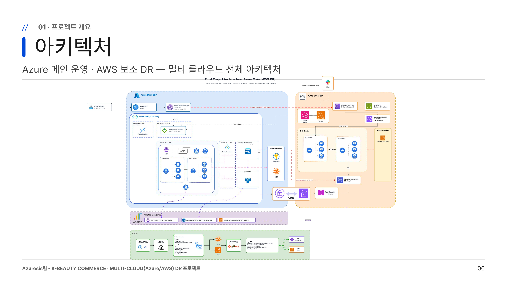
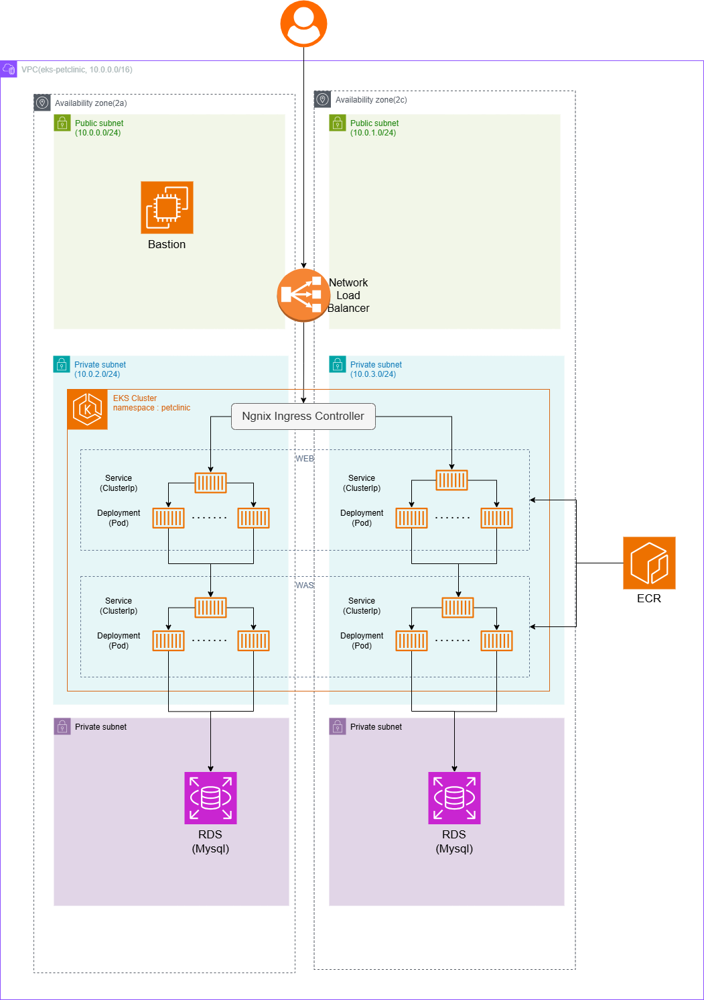
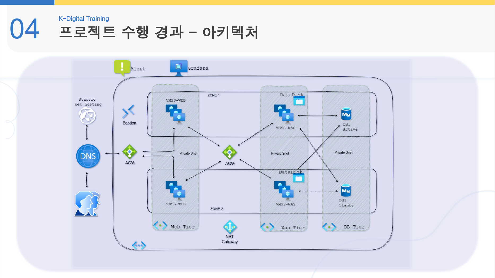

Application을 이해하는
Cloud Engineer
Java/Spring 기반 웹 개발 교육과 프로젝트 운영 경험을 바탕으로, Kubernetes · Terraform · CI/CD · Multi-Cloud DR 환경을 설계하고 운영하는 클라우드 엔지니어 박수현입니다.
기술을 나열하지 않고,
운영 경험으로 증명합니다.
클라우드, 컨테이너, IaC, CI/CD, DB/Cache, 모니터링, 백엔드 이해를 하나의 운영 흐름으로 연결했습니다.
Core Competency
Cloud Architecture
Azure/AWS 기반 3-Tier, 고가용성, 멀티클라우드 DR 아키텍처 설계 및 구현
Kubernetes Operation
AKS/EKS 환경에서 Web/WAS 컨테이너 배포, Service, Ingress, Probe, HPA 구성
IaC & Automation
Terraform 모듈화, Remote State, GitHub Actions, ArgoCD 기반 자동화 경험
Troubleshooting
DB Failover, Redis Session, Secret 주입, 배포/인증 오류 원인 분석 및 해결
Application Understanding
Java/Spring, DB, WAS, 배포 흐름 이해를 기반으로 인프라-워크로드 문제 연결
Documentation
설계 이유, 장애 원인, 해결 과정, 회고를 문서화하여 설명 가능한 포트폴리오 구성
Multi-Cloud DR 기반
K-Beauty Commerce Platform
Azure를 메인 운영 환경으로, AWS를 보조 DR 환경으로 구성한 멀티클라우드 커머스 서비스 운영 프로젝트입니다. 단일 클라우드 장애점(SPOF)을 해소하고 IaC·CI/CD로 자동화하는 DevOps 환경을 구축했습니다.

My Role
- K-Beauty 홈페이지 설계 및 구현
- Terraform 기반 Azure 인프라 구현
- Kubernetes Blue/Green + Canary 배포 구성
- Redis 기반 세션 외부화 적용
- GitHub Actions + ArgoCD 기반 CI/CD 구성
- HTTPS 인증서 적용 및 만료 알림 구현
Why this project matters
단일 클라우드 장애 시 서비스 전체가 중단되는 문제를 줄이기 위해 Azure-AWS 이중 구조를 설계했습니다. Terraform, Kubernetes, CI/CD, Redis, HTTPS를 개별 기술이 아니라 운영 흐름으로 연결한 것이 핵심입니다.
기술을 증명하는 세 개의 프로젝트
각 프로젝트를 선택해 아키텍처, 핵심 구현, 결과를 확인해보세요.
멀티클라우드 DR 기반 K-뷰티 커머스 플랫폼 서비스 운영
2026.06.01 ~ 2026.07.01 (4주) · 팀명: Azuresis (애저시스터즈) · 멘토: 전*진 (Bespin Global)
Overview
Azure를 메인 운영 환경으로, AWS를 보조 DR 환경으로 구성한 멀티클라우드 기반 K-뷰티 커머스 서비스입니다. 단일 클라우드의 장애점으로 인한 서비스 전체 중단 리스크를 해소하기 위해 IaC로 인프라를 코드화하고 CI/CD로 빌드·배포를 자동화했으며, Pilot Light DR 전략으로 비용과 복구 속도의 균형을 맞췄습니다.
Tech Stack

구성 요소
| 계층 | Azure (Main) | AWS (DR) |
|---|---|---|
| 진입/DNS | Azure DNS · Traffic Manager | CloudFront (Failover) → S3 |
| L7 라우팅 | Application Gateway (WAF · AGIC) | ALB Ingress |
| WEB/WAS | AKS (Blue/Green) | EKS Cluster |
| 데이터 | Azure Database for MySQL | Amazon RDS MySQL (DR Target) |
| 세션/보안 | Redis · Key Vault · ACR | ECR (DR) |
| 연결 | VPN (Private) · DMS CDC 복제 | |
핵심 구현
1. Terraform 인프라(IaC) — 역할별 11개 모듈(network·aks·acr·agw·db·redis·keyvault·rbac·traffic_manager·dns·vpn)로 책임 분리. tfstate는 Azure Blob Storage 백엔드에 환경별 경로 분리 저장, 민감정보는 .env(TF_VAR_*)로 분리 후 GitHub Secrets로 주입.
module "agw" {
source = "./modules/azure/agw"
subnet_id = module.network.appgw_subnet_id
depends_on = [module.network]
}
backend "azurerm" {
resource_group_name = "rg-azsis-kbeauty-blob"
storage_account_name = "azsiskbeautytfstate"
container_name = "tfstate"
key = "dev/terraform.tfstate"
}
2. Kubernetes Blue/Green + Canary 무중단 배포 — Service selector를 blue↔green으로 전환하는 방식으로 다운타임 0 유지. AGIC가 가중치 라우팅을 지원하지 않아 /canary 경로 기반 라우팅으로 신버전 검증. readiness/liveness Probe와 HPA(CPU 60% 기준 2~20 replicas)로 자가 치유 구성.
3. Redis 세션 외부화 — HttpSession을 Redis로 분리해 Pod가 바뀌어도 로그인 세션 유지. /api/auth/me 12회 반복 호출 검증에서 로컬 세션(blue)은 일부만 성공, Redis 세션(green)은 12회 모두 동일 JSESSIONID로 성공. Redis 접속 정보는 External Secrets Operator로 Key Vault에서 자동 동기화.
4. CI/CD 자동화 — PR 시 quality-gate(format·validate·lint·security scan) + blue/green 매트릭스 빌드 테스트, merge 시 OIDC 키리스 인증으로 apply 후 ArgoCD가 GitOps 이미지 태그 변경을 감지해 자동 동기화.
5. HTTPS 인증서 자동화 — Let's Encrypt를 DNS-01 방식으로 자동 발급 → Key Vault → App Gateway 443 바인딩. 만료 30일 전 Slack 알람과 자동 재발급으로 만료 사고 방지.
DR 전략 — Pilot Light
데이터는 상시(RDS 복제), 컴퓨팅은 온디맨드로 두어 RTO와 비용의 균형을 맞췄습니다.
| 전략 | 컴퓨팅 | 비용 | RTO |
|---|---|---|---|
| Backup & Restore | 없음 (cold) | 최저 | 수 시간 |
| Pilot Light ✅ | 데이터(RDS)만 상시 | 중간 | 실측 33분 |
| Warm Standby | 최소사양 상시 | 높음 | 수 분 |
| Active-Active | 전부 상시 | 최고(2배) | 거의 0 |
장애 감지는 자동 감지 → 수동 판정 → 수동 트리거 흐름으로 오발동을 방지합니다: EventBridge가 1분 주기로 Azure AGW 헬스체크 → CloudWatch Alarm → Slack 알림 → 담당자가 curl/kubectl/WhaTap으로 직접 검증 → terraform apply로 DR 트리거. 감지 임계값은 15분입니다.
RTO / RPO 테스트 결과
총 5회 훈련 · 목표 달성 4/5회 · 최단 RTO 30분(5회차)
| 회차 | 일자 | RTO 목표 | RTO 실측 | RPO 실측 | 달성 |
|---|---|---|---|---|---|
| 1 | 06-19 | 10분 | 3분 | 0 | ✅ |
| 1 | 06-19 | 60분 | 40분 | 약 5초 | ✅ |
| 2 | 06-23 | 60분 | 120분 | 약 5초 | ❌ (Pod 이미지 빌드 오류) |
| 3 | 06-23 | 60분 | 31분 | 약 5초 | ✅ |
| 4 | 06-24 | 60분 | 35분 | 약 5초 | ✅ |
| 5 | 06-25 | 60분 | 30분 | 약 5초 | ✅ |
향후 개선 방안
| 구분 | 현재 | 개선안 |
|---|---|---|
| 자동화 | Azure 중심 CI/CD 자동화 | AWS까지 CI/CD 자동화 확장 |
| DR 훈련 | 프로젝트 기간 내 5회 훈련 | 분기별 장애 주입 테스트로 지속 검증 |
| 비용 최적화 | Pilot Light 기본 구성 | OpsNow 분석 기반 자원 규모 재조정 |
| 성공률 지표 | 트랜잭션 에러 기준 산출 | Access Log 기반 2xx/4xx/5xx 비율 분석 |
AWS EKS 활용하여 컨테이너 기반의 3-Tier 서비스 운영
쿠버네티스 관리형 서비스(EKS) 기반 컨테이너 3-Tier 웹 서비스 운영 (개인 프로젝트)
Overview
Spring PetClinic 애플리케이션을 컨테이너 기반 3-Tier(WEB/WAS/DB) 구조로 AWS EKS 위에 배포·운영한 개인 프로젝트입니다. 멀티 스테이지 Dockerfile로 이미지를 경량화하고, ECR·Secret·Ingress를 활용해 실서비스에 가까운 컨테이너 운영 환경을 직접 구성했습니다.
Tech Stack

Multi-AZ(ap-northeast-2a / 2c) 구성으로 Public/Private Subnet을 분리하고, EKS 클러스터 내 WEB·WAS Pod를 배치, DB는 Private Subnet의 RDS(MySQL)로 격리한 3-Tier 구조
핵심 구현
1. 컨테이너 이미지 경량화 — WAS는 maven:3.9-eclipse-temurin-17로 WAR 빌드 후 rockylinux:9 런타임에 산출물만 복사, WEB은 alpine:3.19에서 clone 후 nginx:1.25-alpine로 서빙하는 멀티 스테이지 빌드로 용량·공격 표면을 축소했습니다. EKS 배포 전 Docker Compose로 로컬에서 사전 검증했습니다.
2. 프라이빗 ECR 운영 — 두 개의 프라이빗 레포로 이미지를 관리하고 IAM 기반 인증으로 EKS와 연동했습니다.
3. EKS Cluster Access Management — 기존 aws-auth ConfigMap 방식의 락아웃 리스크를 개선해 EKS Access Entry API로 IAM 역할 기반 접근 제어를 구성했습니다.
4. Secret 기반 DB 정보 보안 — DB 접속 정보를 Kubernetes Secret으로 분리하고 secretKeyRef로 환경변수 주입했습니다.
5. Ingress 기반 L7 라우팅 — ingress-nginx + AWS NLB 조합으로 경로 기반 라우팅(/ → WEB, /petclinic → WAS) 구성, liveness/readinessProbe로 Pod 상태를 관리했습니다.
향후 개선 방안
| 구분 | 현재 | 개선안 |
|---|---|---|
| 로드밸런싱 | NLB → ingress-nginx → 라우팅 | AWS Load Balancer Controller로 ALB 직접 사용 |
| IaC | 콘솔 기본 설정 | CloudFormation · eksctl로 자동화 |
| 스토리지 | RDS 연결만 진행 | Persistent Volume 활용 |
Azure 기반 고가용성 3-Tier 웹 서비스 인프라 구축
[베스핀글로벌] 멀티클라우드 취업실무과정 — Azure 1팀 · 2025.03.30 ~ 2025.04.10 (2주)
Overview
전국 20여 개 지점을 운영하는 대형 동물병원 예약/조회 플랫폼(PetClinic)을 대상으로, 매월 초 정기 검진 할인 이벤트 시 접속자가 3배 급증하는 트래픽을 무중단으로 처리하는 엔터프라이즈급 3-Tier 인프라를 Azure 기반으로 구축했습니다.
Tech Stack

My Part — WAS 계층 전담
Internal Application Gateway 설정(L7 경로 라우팅 + Health Check), WAS VMSS 구현(Auto Scaling Min 2 / Max 20 + Pre-warm 정책), Tomcat 9.0 서버 구축(Systemd 등록·골든 이미지 제작), PetClinic 코드 리팩토링(환경변수 기반 Azure MySQL 접속 정보 주입), Grafana·Slack 모니터링 및 nGrinder 부하테스트(TPS 3배 향상 검증)를 담당했습니다.
고가용성(HA) 전략
Web/WAS/DB 모두 Zone 분산 배치(Web·WAS: Zone 1,2 / DB: Zone 1,3). WEB은 Min 2/Max 10, WAS는 Min 2/Max 20 기준 CPU 60%↑ 확장, 30%↓ 축소하는 Auto Scaling을 적용했고, 매월 1일 이벤트 대비 오전 8시 사전 확장(Pre-warm)을 구성했습니다. 강제 Failover 테스트 시 약 30초 내 보조 영역(Zone 3) 전환, 복제 지연 0초를 유지했습니다.
부하 테스트 결과 (nGrinder)
| 구성 | Vuser | 평균 TPS | 평균 응답시간 | 비고 |
|---|---|---|---|---|
| 단일 VM (WAS) | 300명 | 181.8 | 1,619.01 ms | CPU 96~98% 병목 → Scale-out 필요 |
| VMSS (Auto-Scaling) | 500명 | 549.5 | 883.48 ms | TPS 약 3배 향상, 응답시간 45% 단축 |
단일 VM 환경의 물리적 한계를 VMSS Auto-Scaling으로 해소, 성능 3배 향상 및 응답시간 45% 단축을 검증했습니다.
향후 개선 방안
HTTPS 보안 적용, WAF 도입, Azure Key Vault 활용 등 보안 고도화와, 글로벌 CDN 적용, DR 시스템 고도화, Read-Replica 기반 DB 읽기 성능 개선, 자동 장애 복구 스크립트 도입을 계획했습니다.
장애를 숨기지 않고,
원인과 해결 과정을 설명합니다.
증상 → 원인 → 진단 → 조치 → 재발 방지까지, 실제로 추적한 기록입니다.
Redis 세션 외부화 — 세션 유지 실패부터 502·OOMKilled까지+
문제 1. Green WAS 세션 유지 실패
증상 — /canary에서 로그인 후 세션 확인 시 같은 JSESSIONID인데도 일부 요청만 성공(8/12).
원인 — WAS Pod마다 세션을 로컬 메모리에 저장하고 있어, 요청이 다른 Pod로 라우팅되면 세션 정보가 없었습니다.
해결 — was-green에 Spring Session Redis를 적용, Azure Managed Redis를 세션 저장소로 사용해 모든 Pod가 같은 namespace를 공유하도록 구성했습니다.
문제 2. Redis 연결 후 로그인 502
증상 — /canary/api/auth/login 요청 시 502 Bad Gateway, Redis 연결 타임아웃 로그 확인.
원인 — Managed Redis hostname이 Private DNS Zone 미설정으로 public IP로 해석되었고, NSG는 기존 포트(6379) 기준으로만 열려 있어 실제 포트(10000)를 막고 있었습니다.
해결 — Private DNS A record 추가 + NSG 포트를 10000으로 변경.
문제 3. Green Pod OOMKilled / 세션 확인 간헐 실패
증상 — Green이 Blue보다 느리고, upstream connection refused 및 OOMKilled(Exit Code 137) 발생.
원인 — was-green의 리소스 request/limit이 was-blue보다 낮게 설정되어 있었고, readinessProbe가 없어 준비되지 않은 Pod가 트래픽을 받고 있었습니다.
해결 — 리소스를 was-blue 수준으로 상향하고, /api/healthz 기반 startupProbe·readinessProbe를 추가했습니다.
배운 점
세션 유지 문제는 애플리케이션(Spring Session)만이 아니라 네트워크(Private DNS·NSG)와 워크로드 리소스(Probe·requests/limits)까지 함께 봐야 완결됩니다. 같은 증상이라도 원인은 계층마다 달랐고, 계층을 분리해야 진짜 원인에 도달할 수 있었습니다.
HTTPS 접속 실패 — App Gateway ↔ Key Vault 인증서 버전 참조 불일치+
증상
https://www.sue019522.shop/ 접속 실패. TLS handshake 단계에서 실패(SEC_E_ILLEGAL_MESSAGE, tlsv1 unrecognized name). HTTP는 정상 302 리다이렉트 — 라우팅은 정상, TLS 계층만 문제였습니다.
원인
인증서 재발급 과정에서 Key Vault에는 새 secret version이 생성되었지만 App Gateway 업데이트가 중간에 실패해, App Gateway가 이미 삭제된 이전 secret version을 계속 참조하고 있었습니다.
진단
App Gateway가 참조 중인 version과 Key Vault에 실제 존재하는 version을 명령어로 직접 대조해 불일치를 증명했습니다.
조치
App Gateway의 SSL certificate 참조를 최신 Key Vault secret version으로 갱신했습니다.
재발 방지
근본 원인은 GitHub Actions와 로컬 실행자가 서로 다른 Azure AD object ID를 사용하는데, AppGW Key Vault access policy가 단일 실행자 기준으로 관리되어 실행 주체가 바뀔 때마다 policy가 교체된 것이었습니다. 이를 고정 object ID 목록 기준으로 관리하도록 변경했습니다.
배운 점
HTTP는 정상인데 HTTPS만 실패하면 라우팅이 아니라 TLS 계층(인증서 로드)을 먼저 의심해야 합니다. 자동화가 중간 실패하면 존재하지 않는 참조를 남긴 채 배포가 끝날 수 있고, "참조 중인 값"과 "실제 존재하는 값"을 대조하는 것이 진단의 핵심입니다.
DB Failover 시 Connection 갱신 문제+
상황
WAS Tier 담당 중, DB Failover 테스트에서 Zone이 전환되었지만 시스템 정보 화면에 새 DB 정보가 표시되지 않는 문제가 발생했습니다.
원인 분석
Failover로 DB의 DNS는 정상 변경되었으나, 애플리케이션이 기존 Connection 객체를 그대로 유지하고 있는 것이 근본 원인이었습니다.
해결
DataSource-config.xml의 DataSource 옵션을 수정해 Connection 객체가 재생성되도록 설정했습니다. 자동화를 최우선 기준으로 두어, 바뀐 DB 정보가 자동으로 반영되도록 방향을 잡았습니다.
결과
DB Host 정보 출력 불가 → 출력 가능으로 해결, Failover 상황에서도 안정적인 서비스 운영이 가능해졌습니다.
배운 점
인프라만 잘 갖춰져 있어도 애플리케이션(워크로드)이 받쳐주지 않으면 정상 운영이 어렵다는 점을 체감했습니다. 인프라와 워크로드를 하나의 운영 흐름으로 바라보는 관점을 얻었습니다.
본 문서에는 실제 DB 접속 정보, 계정, 호스트명, 비밀번호, Access Key 등 민감 정보를 포함하지 않습니다.
웹 개발 교육 5년의 경험을
클라우드 운영 역량으로 연결합니다.
Java, Spring, Database, Git/GitHub, Linux, AWS EC2 배포를 강의하고 프로젝트를 지도하며 애플리케이션 구조와 배포 흐름을 설명해왔습니다. 이 경험을 바탕으로 인프라 문제를 워크로드 관점까지 함께 분석합니다.
Education & Certification
- AI MSP 베스핀글로벌 멀티클라우드 엔지니어 부트캠프 — AWS, Azure, Docker, Kubernetes, Terraform, CI/CD, DR Architecture
- 빅데이터 분석서비스 개발자 과정 — Java, Python, JSP/Servlet, Spring, Database, Linux, AWS EC2 배포
- 정보처리기사
5년의 교육 경험이 남긴 것
- 애플리케이션 구조 이해
- 문제를 설명하고 문서화하는 능력
- 팀 프로젝트 관리 및 협업 경험
- DB, WAS, 배포 흐름에 대한 이해
- 장애 상황을 단계적으로 분석하는 습관